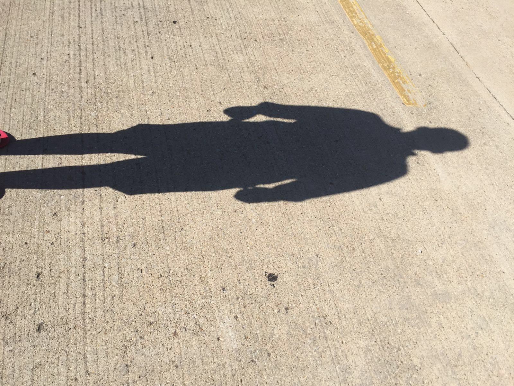

"http://www.w3.org/TR/xhtml1/DTD/xhtml1-transitional.dtd">
<html xmlns="http://www.w3.org/1999/xhtml">
<head>
<script>
function page1()


{
var page = document.getElementById("picture");
var left = 1;
page.style.position = "absolute";
function towardsRight()

{	
left =left+1;
if (left<=900)
{page.style.left = left+"px";} 
else 

{
clearInterval(intervalTowardsRight);
intervalTowardsLeft = setInterval(towardsLeft, 14);
}  

}
function towardsLeft()

{
if (left>=0)
{
left -=1;
page.style.left = left+"px";} 
else

{
clearInterval(intervalTowardsLeft);
intervalTowardsRight = setInterval(towardsRight,16);
}

}


intervalTowardsRight = setInterval(towardsRight,21);   
}
</script>
<center><div style="color:#FFFF00">
<h1><em><p>&#9830;Task #2</p></em></h1></div><center>
<center><h1 style="font-family:cursive"><font-size:130%> <font color="orange">A picture of your own reflection in something other than a mirror ;)</q></font></font></h1></center>
<p style="color:#FFFF00"><q>A picture of a reflection is anthor task on the webpage is a challenging task.</q></p>

<a href="Task3.html" style="float: right;" target="Task3"><font color="green"><h1>Next</h1></font></a>
<a href="Task1.html" style="float: left;" target="Task1"><font color="green"><h1>Previous</h1></font></a>
<center><a href="Intro.html" style="float: middle;" target="Intro"><font color="green"><h1>Home</h1></font></a></center>


</head>
<p align='center'></P>
<body onload="page1();" background="sky.png">
<div id="picture" > 
 
</div>
<script type="text/javascript">
towardsRight()
towardsLeft()
</script>

</div>

</body>
</html>
